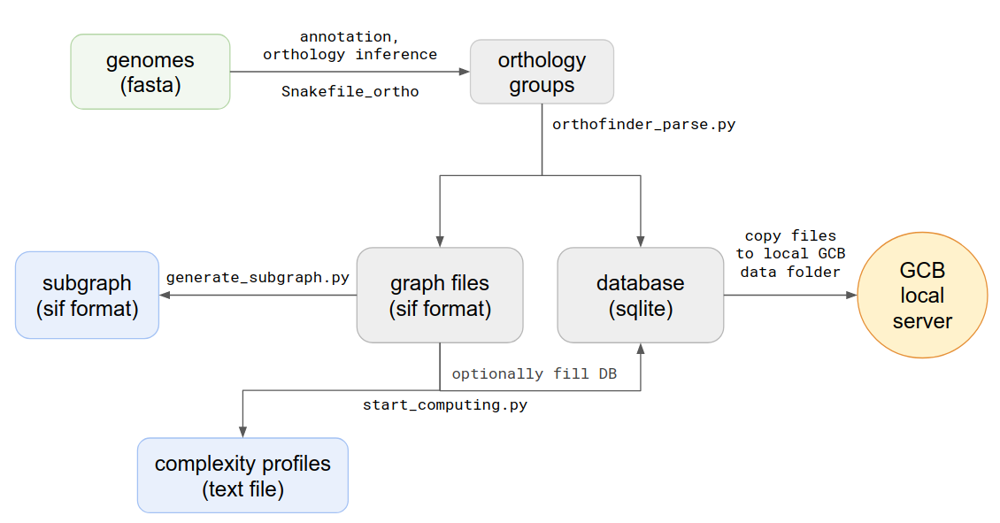

Standalone version to add custom genome sets¶
GCB can be used in three main ways: 1) as a web server with a precalculated set of genomes; 2) standalone application with browser-based GUI; 3) set of command-line scripts.
Standalone version should be used when the user wants to work with a custom set of genomes. Command-line scripts are provided to: calculate complexity profile, generate subgraphs, generate a database which can be imported to browser-based GUI application. Scheme of actions and scripts is shown below.
Orthology group inference¶
To add a custom set of genomes orthology groups should be inferred first. We provide snakemake script: https://github.com/paraslonic/orthosnake to accomplish this task. It takes fasta formatted genome sequences as input. Then gene annotation with prokka tool of each genome is performed. Genbank files then converted to fasta formatted amino acid protein sequences with a custom python3 script. This script inserts special information about genes in fasta headers, namely: genome file name, numeric id, product name, contig, start, end (for example, >GCF_000007445|4|Threonine_synthase|NC_004431.1|4445|5731). Then these files are used to infer orthology groups with OrthoFinder tool. The resulting file with orthology groups (OG) contains information about each OG in the following format: <og id>: <gene1> <gene2> …
For example:
OG0008594: GCF_001618325|2406|Small_toxic_polypeptide_LdrD|NZ_CP015069.1|2607133|2607240 GCF_001663475|366|Small_toxic_polypeptide_LdrD|NZ_CP015159.1|380042|380149
Generating of the graph structure¶
When orthology groups are inferred, the next step is parsing of Orthofinder outputs. To do this you should open source directory and type in terminal:
python3 orthofinder_parse.py -i [path to txt file with orthogroups] -o [path and name prefix for output files]
For example:
python3 orthofinder_parse.py -i ~/data/Mycoplasma/Results/Orthogroups.txt -o ~/data/outputs/Mycoplasma/graph
Output files:
graph.sif- all edges list of the genomes graph
graph.db- SQLite database with all parsed information
graph_context.sif- number of unique contexts, computed for each node in the graph
graph_genes.sif- list of all genes (nodes) from all genomes, with coordinates and Prokka annotations
The main graph structure is stored in a text graph.sif file, where each one line describes one edge, with its source and target nodes, genome id and contig id, to which this edge belongs. This file is used to create a graph object, which is used in all graph processing procedures.
Complexity computing¶
The next step is the computing of genome complexity. To do this type in terminal:
python3 start_computing.py -i graph.sif -o [path to output folder] --reference [name of reference genome]
- Additional parameters:
–window - sliding window size (default 20)
–iterations - number of iterations in probabilistic method (default 500)
–genomes_list - path to file with a list of names which will be used to create a graph (default all strains from *.sif will be used)
–min_depth, –max_depth - minimum and maximum depth of generated paths in the graph (default from 0 to inf)
–save_db - path to the database, created by orthfinder_parse.py (default data will not be saved to db, only to txt). It’s necessary to use this parameter if you want to use this complexity profile in the stand-alone browser-based GCB application.
Output files for each contig in the reference genome:
all_bridges_contig_n.txt- this file contains information about the number of deviating paths between each pair of nodes in the reference genome